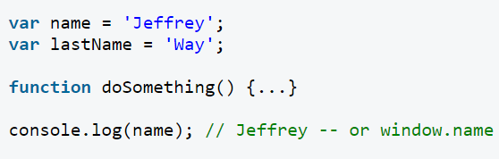
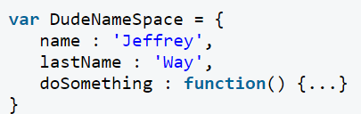
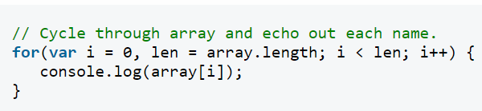
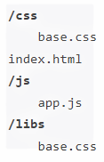

Buenas prácticas de edición de código en JS
"Javascript, un lenguaje poderoso, dando un salto en la tecnología"
Como cualquier otro lenguaje de programación, JavaScript tiene algunas características especiales: sintaxis, modelo de objetos, etc. Claramente, cualquier cosa que diferencia un lenguaje de otro. Además, descubrirás rápidamente que JavaScript es un lenguaje relativamente especial en su acercamiento a las cosas. Esta parte es esencial para cualquier principiante de programación e incluso para aquellos que ya conocen un lenguaje de programación debido a que las diferencias con otros lenguajes de programación son numerosas.
A continuación se muestran algunas buenas practicas en js:
1.Utilizar === En lugar de ==
JavaScript utiliza dos tipos diferentes de operadores de igualdad: === | !== y == | != Se considera que la mejor práctica es utilizar siempre el primer conjunto al comparar.
"Si dos operandos son del mismo tipo y valor, entonces === produce verdadero y !== produce falso"Sin embargo, al trabajar con == y !=, te encontrarás con problemas al trabajar con diferentes tipos. En estos casos, intentarán coaccionar los valores, sin éxito.
Utiliza JS Lint
JSLint es un depurador escrito por Douglas Crockford. Solo tienes que pegar tu script, y rápidamente escaneará en busca de problemas y errores notables en tu código.
"JSLint toma una fuente de JavaScript y la escanea. Si encuentra un problema, devuelve un mensaje que describe el problema y una ubicación aproximada dentro de la fuente. El problema no es necesariamente un error de sintaxis, aunque a menudo lo es. JSLint examina algunas convenciones de estilo, así como problemas estructurales. No demuestra que tu programa sea correcto. Solo proporciona otro par de ojos para ayudar a detectar problemas"Coloca los scripts en la parte inferior de tu página
Si tienes archivos JS cuyo único propósito es añadir funcionalidad, por ejemplo, después de hacer clic en un botón, coloca esos archivos en la parte inferior, justo antes de la etiqueta de cierre del cuerpo. Se trata de una práctica absolutamente recomendable.
Reducir Globales
"Al reducir tu huella global a un solo nombre, reduces significativamente la posibilidad de malas interacciones con otras aplicaciones, widgets o bibliotecas"

Mejor manera

Observa cómo hemos "reducido nuestra huella" a solo el objeto ridículamente llamado "DudeNameSpace".
Comenta tu código
Puede parecer innecesario al principio, pero créeme, QUIERES comentar tu código lo mejor posible. Qué pasa cuando vuelves al proyecto meses después, solo para descubrir que no puedes recordar fácilmente cuál era tu línea de pensamiento. O, ¿qué pasa si uno de tus colegas necesita revisar tu código? Siempre, siempre, comenta las secciones importantes de tu código.
Utiliza siempre, siempre, el punto y coma
Puede parecer innecesario al principio, pero créeme, QUIERES comentar tu código lo mejor posible. Qué pasa cuando vuelves al proyecto meses después, solo para descubrir que no puedes recordar fácilmente cuál era tu línea de pensamiento. O, ¿qué pasa si uno de tus colegas necesita revisar tu código? Siempre, siempre, comenta las secciones importantes de tu código.
Eliminar "Idioma"
Antes no estaba la sección de lenguajes en JavaScript pero se implemento hace unos años.
"script type="text/javascript" language="javascript"> ... /script>"
Estructura de carpetas
Una buena practica para tener el código organizado es utilizar una buena estructura de carpetas, que sea fácil de entender y mantener. Un ejemplo podría ser así:

En /js organizariamos en carpetas lógicas dependiendo de lo complejo de nuestra aplicación.
Refactorizar y evitar código duplicado
Vamos, como en cualquier otro lenguaje, debemos evitar tener estructura duplicadas a lo largo del programa y refactorizarlas por funciones o clases que centralicen este tipo de código.
Separar el código por responsabilidades
Para crear aplicaciones sólidas el código debe ser intuitivo y ser fácil de comprender por otras personas que no hayan estado en el desarrollo. Esto implica una limpieza y organización que al aplicara hace que todo fluya de forma natural, y sea muy fácil adaptar el código a nuevas necesidades sin dolores de cabeza.
En el caso de las aplicaciones web, una buena práctica es separar el estilo (colores, fuentes, etc) de la estructura de visualización, y la lógica de negocio, tambien a parte. Si es posible deben cada capa debe estar en ficheros distintos o por lo menos en partes fácilmente localizables y con un patron de forma que sea fácil de encontrar siempre
➤ Estilo
➤ Lógica
➤ Estructura